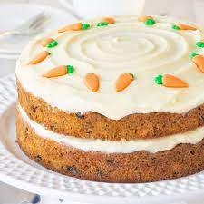

Carrot cake

Easiest Carrot Cake Recipe
Best Rated moist light and fluffy carrot cake sure to please any sweet tooth in the family
The recipe is easy to follow anyone can do it from the most experinced bakers to a novice so prepare to be satisfied listed below you will find all the ingredents and the steps to create this master piece so enjoy.

Ingredients
- Sugars: You'll need white sugar for the cake and confectioners' sugar for the frosting.
- Oil: A neutral oil, such as vegetable oil, adds moisture without imparting flavor.
- Eggs: Four whole eggs lend moisture and help bind the carrot cake batter together.
- Vanilla: Two teaspoons of vanilla extract for the cake (and one teaspoon for the frosting) enhances the flavor.
- Flour: All-purpose flour creates structure and brings the batter together.
- Leaveners: Baking soda and baking powder act as leaveners, which means they help the cake rise.
- Cinnamon: Ground cinnamon adds that warm, cozy flavor you associate with carrot cake.
- Salt: Salt enhances the flavors of the other ingredients, but it won't make the cake taste salty.
- Carrots: Of course, you'll need grated carrots!
- Pecans: Chopped pecans give the cake and frosting a pleasant crunch.
- Butter and cream cheese: Butter and cream cheese are the key ingredients in the light and fluffy cream cheese frosting.
Steps
- Make the batter: Beat the wet ingredients together, then mix in the dry ingredients. Stir in the carrots and fold in the pecans.
- Bake the cake: Pour the batter into the prepared cake pan or pans. Bake in the preheated oven until a toothpick comes out clean.
- Frost the cake: Beat the frosting ingredients together until smooth and creamy. Stir in the pecans. Frost the (completely cooled) cake.